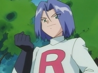
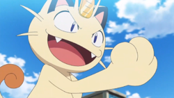
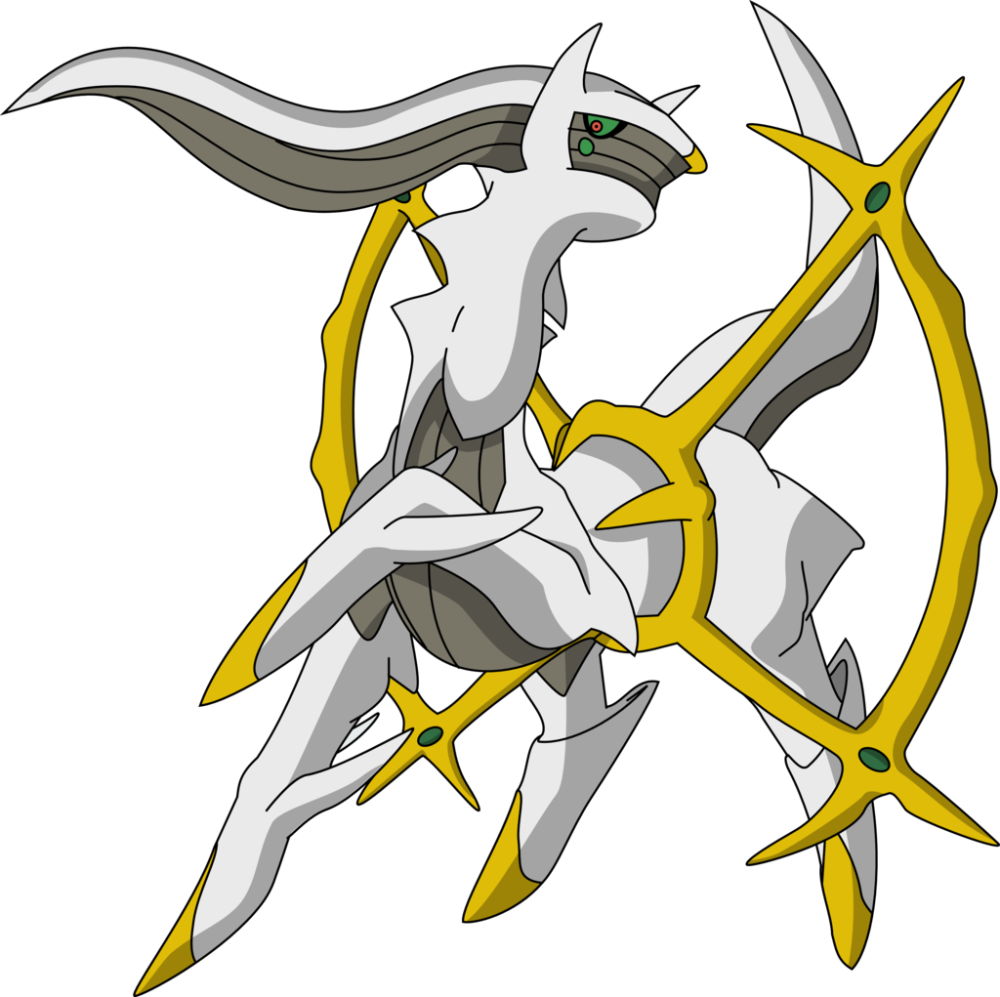
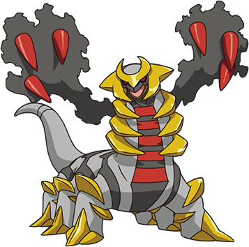

Bienvenidos a Pueblo Paleta
Un mundo de maravillosas criaturas te espera
SQUIRTLE
Cuando retrae su largo cuello en el caparazón, dispara agua a una presión increíble. Vamo' a calmarno' 😎

Squirtle tiene forma de una tortuga semiacuática de una tonalidad azulada, su caparazón es color café, las placas periféricas de color blanco y finalmente su plastrón de una tonalidad crema, posee una cola con la punta enrollada, además de tres dedos en cada una de sus extremidades, una boca con una punta en forma de pico característico de las tortugas y unos grandes ojos de tonalidad rojiza. Al nacer su espalda se va hinchando hasta formarse un caparazón, al principio es blando y elástico, si lo golpeas este rebotará, pero conforme pasa el tiempo se irá endureciendo para resistir los ataques de cualquier amenaza, ocultándose dentro de él cuando siente peligro, al estar escondido puede lanzar una enorme presión de agua desde su interior cuando tiene la oportunidad. Su caparazón no solo le sirve de protección únicamente, con su forma redondeada y las hendiduras que posee, le sirven para reducir su resistencia en el agua y así poder nadar a enormes velocidades. Además lanzar con gran precisión chorros de agua a presión por la boca, también puede lanzar espuma y usar su duro caparazón para el ataque. Siempre se lo ve cerca de cuerpos de agua, ya sean de agua dulce o salada.
CHARMANDER
Este Pokémon nace con una llama en la punta de la cola. Si se le apagara, fallecería. Estoy caliente 🔥

Charmander es un pequeño lagarto bípedo. Sus características de fuego son resaltadas por su color de piel anaranjado y su cola, cuya punta está envuelta en llamas. Charmander y sus evoluciones, Charmeleon y Charizard, tienen una pequeña llama en la punta de sus colas desde que nacen. La intensidad con la que ésta arde es un indicador del estado de salud y emocional de este Pokémon: si la llama arde con mucha fuerza, indica que está completamente sano, y si arde muy levemente, significa que se encuentra débil. El Pokémon podría morir si la llama de su cola se apaga. Viven en grupos, cuidando las llamas de sus colas entre sí. Prefieren los lugares silenciosos y rocosos. Se pueden llegar a escuchar los chisporroteos de su llama. Los lugares secos y cálidos son mejores para ellos, por lo que frecuentemente son encontrados en cuevas o en las cercanías de volcanes y montañas. En la lluvia es fácil reconocerlos por el vapor que emana de su cola, la cual seguirá ardiendo aunque se moje un poco. Cuando son bebés aún no están familiarizados con el fuego, pudiendo llegar a quemarse a sí mismos.
BULBASAUR
Este Pokémon nace con una semilla en el lomo, que brota con el paso del tiempo. Nadie me elige 😭

Bulbasaur es un Pokémon cuadrúpedo de color verde, posee manchas de una tonalidad más oscura del mismo color con distintas formas geométricas. Su cabeza representa cerca de un tercio de su cuerpo. En su frente se ubican tres manchas que pueden cambiar de posición, forma o lugar dependiendo del ejemplar. Tiene como orejas muñones pequeños y puntiagudos. Sus ojos son grandes y de color rojo. Sus patas son cortas y posee tres garras en cada una. Este Pokémon tiene plantado un bulbo en el lomo desde que nace, esta semilla crece y se desarrolla a lo largo del ciclo de vida de Bulbasaur a medida que suceden sus evoluciones. El bulbo absorbe y almacena la energía solar que Bulbasaur necesita para hacer florecer el bulbo de su lomo y evolucionar en Ivysaur. Dicen que cuanta más luz consuma la semilla, más rápido crecerá y brotará, por lo que es muy común ver a este Pokémon tumbado echándose una siesta en lugares donde los rayos del sol lleguen a plenitud. Por otro lado, gracias a los nutrientes que el bulbo almacena, puede pasar varios días sin comer. Su cuerpo según a palabras de Ken Sugimori y Junichi Masuda en una entrevista, está basado en un anfibio (sapo o rana), al igual que toda su línea evolutiva.

Pikachu
Soy el favorito y la queso 💅🏼
EQUIPO ROCKET
-
 Jessie
Jessie
Preparense para los problemas -

James
Y más vale que teman -

Meowth
Meowth! Así es! -
 Team Rocket
Team Rocket
El Equipo Rocket viajando a la velocidad de la luz! Ríndanse ahora o preparense para luchar!
Tags
Japon Pokeball Impactrueno Nintendo Pokedex Satoshi Tajiri Pokemon Ash Tokio Entrenador Pokemon Go NES Videojuego Criaturas
Pokemons más poderosos




Follow Me
Subscribe
Enter your e-mail below and get notified on the latest blog posts.